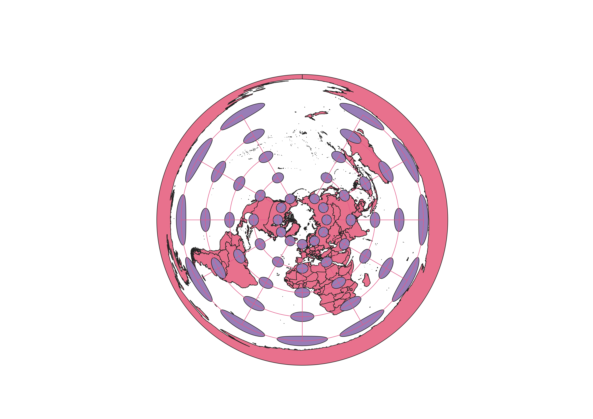

Using QGIS, I was able to use the zip file provided to see the world layed out. Using the QGIS tool for Tissot's Indicatrix, I was also able to apply Tissot's circles to the world map so that I could have the chance to see how the projections I applied would distort the map. Then, I browsed QGIS projections and applied various ones and observed the map's changes and distortions, and was able to download them as PNG files.
Commonly used for Google Maps, this projection helps keep direction accurate. The shapes and areas of the continents are heavily distorted at certain parts as a result of keeping direction conformal. The North and South Poles are very distorted in area, with the South Pole very large in comparison to the other continents.
Since this is the latitude and longitude coordinate system rather than a projection for analysis, it keeps the distance and area of the continents well conformed. Although it distorts the shape, it overall presents a clear view of the world laid out so that the locations and shapes of the continents are easy to decipher.
This projection is azimuthal and projects a spherical view of the world onto a map. This keeps direction conformal akin to the shape of the globe, but other aspects are then heavily distorted. Shape and area do not appear very accurately on this projection and is difficult for distance travel use.
For this projection, there is a lot of distortion with distances and directions, but the general shapes and areas of the continents are less distorted. This map would likely not be very useful for trying to convey the distances of places from one another. The map appears to bulge out at the equator and there is more elongation and distortion around the poles than around the equator.
This projection really elongates the map horizontally and confines it vertically. The distances would be very distorted for any particular analysis. This map uses a cylindrical projection and is equal-area, so it does conform to area but distorts a lot of other aspects of mapping.
This map is stated to be conic, but it looks a lot like an azimuthal projection. The map is centered all around the North pole, so it is hard to distinguish the various countries. The shapes are super distorted and this map would be very hard to use in every day, general analyses of distances.
This projection is also centered around the North Pole like the projection above. However, this one is not conic because it wraps all the way around to create a 360 degree circular map. The shapes are very distorted, but this sort of projection could be useful if one did analyses on an area very far North.
This projection causes a bulge around the area of the equator and really stretches out the shapes of continents towards the South and North polar areas of the globe. There is a lot of distortion North and South, but some continents are less distorted, like Africa. It looks like directions could be pretty distorted when using this map to understand the layout of different oceans and areas of land.
This projection heavily distorts the size of the South Pole. The map takes an interesting shape, and doesn't seem to keep many aspects of the Earth conformal. It somewhat resembles the Pseudo Mercator map, but has differentiating skews as well.